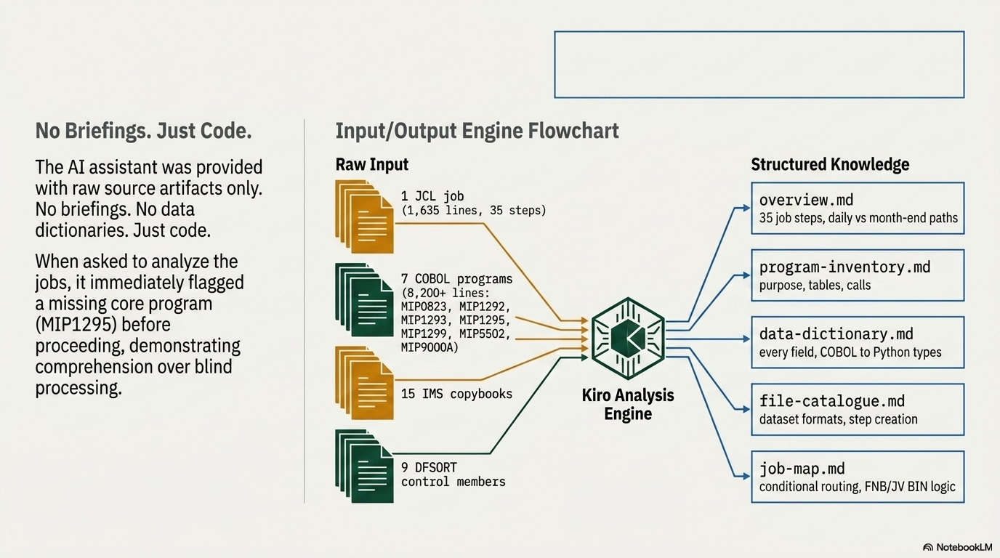

The output of this process is a structured knowledge repository. This ensures you are no longer "hostage to the code" — you become the owner of the intent.

The Knowledge Wiki
A set of documents designed to be consumed by both humans and AI assistants. When a new session opens a project, it reads the wiki and immediately has full system context — without needing to re-read the source code.
System Overview
Comprehensive system description detailing all job steps, daily vs. month-end paths, complex run dependencies, and execution context. Every processing branch documented.
Program Inventory
Deep dive into every COBOL program's purpose, internal algorithms, and I/O contracts. Confidence-annotated: every fact marked as CONFIRMED, INFERRED, or GAP.
Data Dictionary
Maps legacy layouts (IMS segments, copybooks) to modern formats with byte offsets and field types. Data structured for accessibility and modern use.
File Catalogue
Roadmap of all data assets — record lengths, consumption patterns, and dependencies across the entire system. Understand who produces and consumes every dataset.
Job Map
Visual and textual representation of data flow and conditional execution. No logic branch left undocumented. Includes return code conventions and step dependencies.
Domain Glossary
Business terminology mapped to technical artefacts. Bridge the gap between what the business calls things and what the code calls them.
Wiki Detail: What These Documents Actually Look Like
Program Inventory (excerpt)
Every program is documented with its role, inputs, outputs, and internal processing logic:
MIP1295 — Core IMS Extraction and Transformation
Type: COBOL E35 DFSORT exit (reentrant)
Called by: ICEMAN (S020 via IDMIF023 MODS E35)
Role: Reads IMS BC0QCAP1 segments, transforms to all output load files
Inputs: IMS unload (20 partitions), BDS run date, billing partition assignment,
credit limit % table, credit interest rate table
Outputs: 13 separate output files (card loads, billing, Navigator, plastic,
limits, related accounts, sub-products)
Internal Tables:
W600-LIMIT-PCT-TABLE (999 entries): FIID+AcctType → EC limit %
W600-INT-RATE-TABLE (9999 entries): FIID+ECPlan → Annual Rate
Processing: For each IMS record group (account):
Accumulate segment data → write assembled output records
Skip "dud" records (all-zero account numbers)Data Dictionary (excerpt)
Every field mapped with COBOL type, byte size, modern type equivalent, and source segment:
Field Name (COBOL) | Python Type | Size | Source | Description
W100-CO-CDE | int | S9(4) COMP | 118000 | Company ID
W100-PROD-CDE | str(3) | X(3) | 118000 | Product code
W100-CH-ACCT-NO | Decimal | S9(16) COMP-3 | 118000 | Account number (16-digit)
W100-CURR-STAT-CDE | str(3) | X(3) | 118000 | Current status code
W100-CURR-CRLN | Decimal | S9(11) COMP-3 | 118000 | Current credit line
W100-CR-BAL | Decimal | S9(11)V99 CP-3 | 118050 | Credit balance
W100-EXTD-CR-CURR-BAL | Decimal | S9(11)V99 CP-3 | 118056 | Extended credit balance
W100-TD-EMB-NM-LN-1 | str(26) | X(26) | 118072 | Embossed name line 1File Catalogue (excerpt)
Every dataset documented with record length, format, content, and consumer:
Dataset | LRECL | RECFM | Content
IDMI.ZAF.FC.CARD.ACCT.BILL.FULL.SORTED | 1341 | FB | Monthly billing security (sorted)
IDMI.ZAF.FC.CARD.ACCT.BILL.TEMP.SORTED | 1341 | FB | Daily billing (sorted)
IDMI.ZAF.FC.CARD.ACCT.BILL.SEC(+1) | 1341 | FB | New billing records output
IDMI.ZAF.FC.CARD.BILL.REJDUPS.SEC(+1) | 1341 | FB | Duplicate rejections
BCNE.ZAF.BCNE393D.STMTDATA.SEC1(0) | 1500 | FB | Navigator statement summaryJob Map (excerpt)
Conditional execution flow with branching logic clearly documented:
S040 MIP0823 Month detection [IF S020.RC=0]
│ RC=0 → daily path
│ RC=1 → month-end path
│
├─[RC=0]─► S050 Sort monthly security [daily only]
│ S060 MIP1293 Dedup billing [daily only]
│ S080 Append to monthly security [daily only]
│
├─[RC=1]─► S042 Roll NavBill → monthly GDG [month-end only]
│ S070 New billing security [month-end only]
│ S090 Copy sorted temp [month-end only]Component Specification Set
For each component selected for modernisation, the framework produces a complete specification library:
| Document | Purpose | Key Property |
|---|---|---|
| BRS — Business Rules | EARS rules describing what the system does | Technology-agnostic, testable, traceable to source |
| FRS — Functional Requirements | System-level behaviour with data mappings | Byte-level precision, edge cases explicit |
| TDD — Technical Design | Implementation-ready code in target language(s) | Multiple languages from same BRS |
| GAPS — Open Questions | Ambiguities requiring human resolution | Prioritised, with evidence and resolution paths |
Because business rules are technology-agnostic, the same specification set also drives multiple language implementations — see The Re-Written Code for how that plays out.
What Makes This Different
- Self-contained — the wiki alone is sufficient to understand the system
- Machine-parseable — JSON versions alongside markdown for programmatic use
- Confidence-annotated — every fact marked as CONFIRMED, INFERRED, or GAP
- Source-referenced — every fact traces to a specific code location
- Persistent — knowledge that outlives any individual developer or AI session